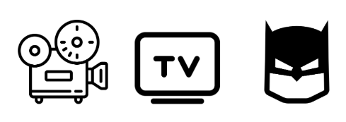

<header>
    
    
    
	<section>
		<nav>
			<ul>
				<li><a href="index.html">El Infocalipsis</a></li>
				<li><a href="infocalistos.html">Los Infocalistos</a></li>					
				<li><a href="dummy.html">Episodios</a></li>					
				<li><a href="dummy.html">Amigos</a></li>
			</ul>
		</nav>
	</section>
</header>
